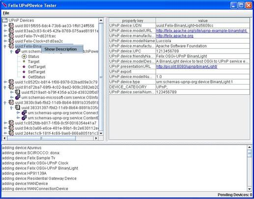
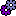
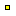

Testing UPnP devices
The org.apache.felix.upnp.tester bundle installs a component that shows the UPnP devices registered with the OSGi framework. It provides a GUI shown in the Figure 6 that can be used for controlling the discovered devices: by invoking actions and by subscribing for the state variable changes occurring on them.

Figure6 The UPnP Tester GUI
In the left panel you can browse the devices discovered on the OSGi platform. Remember that they may be registered by the base driver as well as by other bundles installed on the platform. Therefore stopping the base driver you will continue to see the local devices, but they will be no more exported. The devices with their hierarchy of the embedded devices and services are represented as nodes of a tree with the following icons:
- Root Device
- Embedded Device
-  Service
- Action
-  State Variable
 Evented State Variable
Evented State Variable- Subscribed State Variable
By clicking on the Root Device icon, the register properties defined by the device are shown on the right panel. You can distinguish between exported and imported devices by looking for the property key "UPnP.export" and "UPnP.device.imported" respectively.
By right-clicking on the Root Device, Embedded device, or Service icon a context menu is displayed to open the XML description of devices and services (see Figure 6)
By clicking on the Service icon, the Service Id and Type are shown in the right panel together with buttons for subscribing all the state variables of the service. The received notify message is displayed on the bottom panel.
By clicking on the Action icons, the right panel displays a form where the input parameters of the action can be inserted. Use the "do Action" button to execute it; the results, if any, will be displayed in the table below the input parameters.
Finally, by clicking on the state variables shows the associated property keys as the default value and minimum and maximum value, if any.
Menus
- The "Search" menu forces the UPnP Base Driver to execute a UPnP M-Search for UPnP Root Devices or for all types of devices. This search is usually automatically executed during the start up of the base driver.
- The "Felix Logger" and "Cyber Debugger" menus enable displaying of the messages received and sent by the base driver (i.e. the content of the UDP communication).
- The "Print Pending Devices" is a utility menu to verify whether incomplete hierarchy of embedded devices have been registered with the framework.
- The "Check Errata UPnPDevices" menu may help the user verify that all the local UPnP Devices have been registered with the mandatory properties, otherwise they would not be exported.